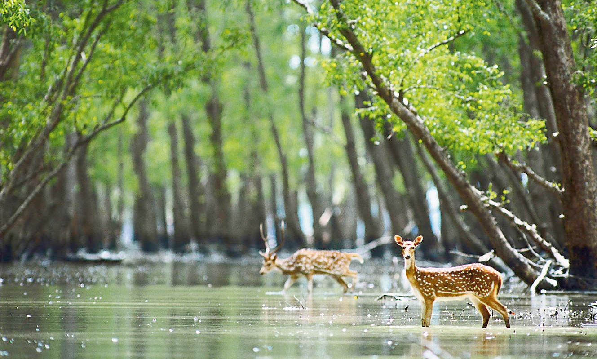
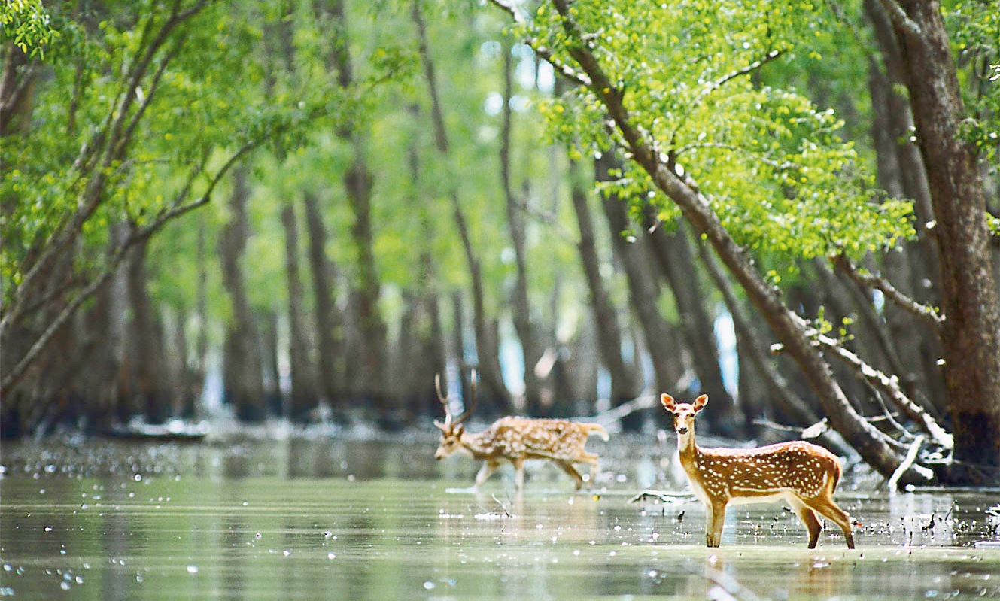

Bangladesh has flourished herself as a beautiful country around the world due to its unlimited natural beauty like the longest sea beach in Cox's bazaar, the largest mangrove forest & the royal Bengal tiger in Sundarbans. ... Its beauty lies in its unique natural surroundings.
It is home to the world's largest river delta, which is formed by the Brahmaputra and the Ganges river. Roaming Bengal tigers in the Sundarbans, a mangrove and swampland in the delta. For the longest natural uninterrupted sea beach in Asia (Cox's Bazar beach), which is 150 km long.
 
